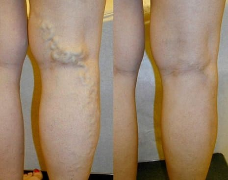

Szakértő az érsebészet területén: a visszértágulat a nőknél egy rendkívül veszélyes patológia. Azonban ez a probléma ma már könnyen megoldható.
A visszerek előfordulása szokatlanul magas. Különböző kutatások szerint a fejlett országokban a nők 89%-a, a férfiak 66%-a szenved bizonyos fokú tünetektől. A legveszélyesebb ebben a kórképben az, hogy idővel nem javul, az értágulat csak fokozódik, ami azt jelenti, hogy a végtagduzzanat, a fájdalom és az érrendszeri trombózis kockázata idővel csak nő.
A modern eszközökkel azonban ez a probléma ma már könnyen megoldható. Hogyan? Nicola Tudorache, független érsebész szakértő, kiváló tudós, az Európai Érsebész Társaság tagja, az Érsebész Egyesület elnökségi tagja és a Modern Érsebészeti Központ vezetője ebben az interjúban a férfiak és nők visszérbetegsége elleni küzdelem korszerű módszereiről beszél.
"Nicola, árulja el, mi olyan veszélyes a visszerekben, különösen a nők számára?"
— Az igazság az, hogy sokan nem is tudják, hogy ez egy komoly állapot, és alábecsülik a következményeit. Sokan remélik, hogy végül magától elmúlik, de tény, hogy ez nem így van. A visszerek tönkretehetik az ember életét: a kialakuló állandó duzzanat, valamint a fájdalom miatt gátlások alakulnak ki. Egyébként nem véletlen, hogy az alsó végtagok visszerességében szenvedő embereknél mindig előfordul a bőr hiperpigmentációja, kékes árnyalata, és előrehaladottabb esetekben fekélyek is kialakulhatnak. A környezetében lévő emberek természetesen mindezt észreveszik, ami további frusztrációhoz vezet. A visszeres lábú embereknek alaposan át kell gondolniuk a ruhatárukat, hogy elrejtsék a problémát: bő cipőt, hosszú nadrágot és gyakran sötét harisnyát viselnek.
De ennek a patológiának a fő veszélye az, hogy gyakran vezet tromboflebitiszhez, ami miatt a vérrögök elzárhatják a véna lumenét, vagy leszakadhatnak és az alsó üres visszér rendszerén keresztül a tüdőbe juthatnak. Ez tüdőembóliához vezethet, ami súlyos szövődmény, és néha végzetes kimenetelű lehet.
Ha a visszérbetegség előrehaladott stádiumba kerül, dinamikus vénás magas vérnyomáshoz vezethet, de a vénás rendszerben a nyomás nem csökken annyira, amennyire a szövetek normális vérellátásának biztosításához szükséges. Krónikus vénás elégtelenség alakul ki. Először ödéma keletkezik, majd a folyadékkal együtt vérsejtek (eritrociták, leukociták) kerülnek a szubkután szövetekbe. Lipodermatoszklerózis és hiperpigmentáció alakul ki. A mikrokeringési zavarok és a vér pangása következtében a bőrsejtek pusztulni kezdhetnek, és trophikus fekélyek alakulhatnak ki. Ez ágyhoz kötött élethez vezethet.
Valójában azok az emberek, akik önállóan próbálkoznak leküzdeni a visszereket (vagy egyáltalán nem harcolnak a betegséggel) egy időzített bombával élnek együtt. És őszintén szólva nem nagyon értem, miért csinálják ezt. Ma már azonban igen hatékony módszerek léteznek a visszerek elleni küzdelemre.
— Sebészeti módszerekről beszél?
— Természetesen nem. Valójában inkább mindenkit lebeszélnék egy ilyen beavatkozásról. Ez magában foglalja a lézerterápiát is. Függetlenül az eljárások költségeitől, ezek a beavatkozások számos negatív egészségügyi következménnyel is járhatnak, mivel vérrögök leválásához vezethetnek. A műtét legfőbb hátránya azonban az, hogy csupán esztétikailag korrigálja a problémát, azaz nem szünteti meg a betegség okát.
Mivel az okot nem szüntetik meg, a probléma a jövőben ismét jelentkezhet, méghozzá nagyon gyorsan, 1-2 éven belül.
Ha egyszer és mindenkorra meg akarja szüntetni a visszerek kialakulásának kockázatát, akkor az okot kell kiküszöbölni. A visszerek kiváltó mechanizmusa a vénabillentyűk hibás működése, ami visszaáramlást (reflux) okoz.
A műtét során a vénákat részben vagy teljesen kitisztítják, de a normális billentyűfunkciót ez a beavatkozás nem állítja helyre. Ez a probléma ismétlődéshez vezethet. Ezért nem ajánljuk többé az ilyen műveleteket a Központunkban.
— Mit tanácsol a visszeres embereknek?
— Például van egy nagyon jó termék, amely segít visszértágulat esetén: a . Az Európai Érsebészeti Intézet 2018-ben fejlesztette ki. Mivel ezt a terméket otthoni használatra szánják, és maga az intézet nem érdekelt kereskedelmi tevékenységekben, a magángyógyszertárakban árult termékekhez képest fillérekbe kerül, nem is beszélve arról, hogy ez a készítmény valóban segít!
— Tudna konkrét példákat mondani arra, hogy milyen eredményt hozott a visszerek ellen ennek a készítménynek az alkalmazása?
— Igen, természetesen. Több száz esetről tudnék beszámolni, de most azokra koncentrálok, amelyek a legjobban illusztrálják az adott termék előnyeit:
A vénák teljesen regenerálódtak. Kúra ideje: 4 hét.
A fotók egyértelműen mutatják, hogy a nemcsak a betegség tüneteinek megszüntetésében segít, hanem a visszértágulat regenerációs folyamatainak beindításában is. Ennek eredményeként a vénák képesek regenerálódni.
A vizsgálatok eredményei és saját tapasztalatom szerint a az egyik legjobb visszér elleni készítmény, amelyet a központunkban alkalmazunk. És ami a legfigyelemreméltóbb, hogy otthon is használható. Végül is sokan nem akarnak szakemberhez fordulni. És ez érthető, különösen a közelmúlt eseményeinek fényében. De a segít önállóan megszabadulni a visszértágulattól.
— A egy gél vagy tablettákról van szó?
— Ez egy olyan gél, amely egy speciális formulának köszönhetően segít megállítani a visszér kialakulását és helyreállíthatja a vénákat. A egy viszonylag új fejlesztés a tudósok részéről.
Ezenkívül nem vegyi készítmény, hanem természetes összetevőkön alapul, ami gyakorlatilag kizárja az allergiás reakciókat és a használat során felmerülő egyéb problémákat. Emellett általában nincs káros hatással a szervezetre, és nem teszi ki a szervezetet különböző kémiai vegyületek hatásának.*
— Ha a nem kapható a kereskedelmi egységek polcain, akkor hol lehet hozzájutni?
— Nagyon egyszerű, a gélhez úgy juthat hozzá, hogy a hivatalos weboldalon keresztül felveszi a kapcsolatot az Érsebészeti Intézettel, vagy kitölti az alábbi űrlapot. A készítmény rendszeresen részt vesz különféle jótékonysági programokban, ami valóban társadalmi jellegűvé teszi.
A például most a "Visszérmentes ország" elnevezésű speciális program része, amelynek keretében kedvezményes áron kapható.
A a visszér legelőrehaladottabb eseteiben is képes segíteni, ezért még a betegség súlyos formái esetén is ajánlott. Megelőzésre is használható.
Szeretném megosztani a vizsgálatok eredményeit a nel végzett kúra befejezése után, ami sok szakembert és tudóst kellemesen meglepett. Igazi megváltás ez azoknak, akik visszértágulattól szenvednek.
1. A hatékonysága a szokásos módszer szerint számítva (570 önkéntes vett rész a vizsgálatokban):
- A fájdalom megszűnése: 99%.
- Lábduzzanat csökkenése: 98%
- A nehézségérzet és a kényelmetlenség csökkenése a lábakban: 99%.
- A teleangiektáziák hiánya: 98%.
- A visszér megszűnése: 93%.
- A hiperpigmentáció javulása: 96%.
2. Nem észleltek nemkívánatos mellékhatásokat, beleértve az allergiás reakciókat.
3. A a visszértágulat elleni küzdelem egy elismert eszköze.
Az Európai Intézet mellett ezt a terméket Amerikában a New York-i Flebológiai és Hematológiai Egyetemen is tesztelték. A vizsgálatok teljes mértékben megerősítették ezeket az adatokat. Az amerikaiak még gyorsabb javulási arányt is mutattak ki. A latin-amerikai országok nagy érdeklődést mutatnak a termék iránt. Minden tanulmány kimutatta, hogy ez a termék hatékony

— Azt hiszem, olvasóinkat érdekelni fogja, hogyan lehet megvásárolni a terméket a speciális program keretében.
— Ez a program jelenleg csak bizonyos régiókban érhető el. Amikor egy adott régióra vonatkozó mennyiség elfogy, a program ideiglenesen "felfüggesztésre" kerül, amíg megérkezik a következő szállítmány.
A termék átvételéhez mindössze annyit kell tennie, hogy az oldalon található űrlapon leadja megrendelését, megadva nevét és telefonszámát, hogy a tanácsadó központ munkatársa felvehesse Önnel a kapcsolatot. Ha látja a megrendelőlapot, az azt jelenti, hogy a termék még mindig elérhető az Ön területén. Személyesen garantálom a termék megvásárlásának lehetőségét minden érdeklődő számára.
— Szeretne még valamit mondani olvasóinknak, mielőtt befejezzük az interjút?
"Csak annyit akarok mondani, hogy ne adják fel, vigyázzanak az egészségükre. Lehet, hogy nem is sejti, hogy visszeres a lába. Ez a betegség teljesen észrevehetetlenül kezdődik: először csak a lábak nehézsége és fáradtsága jelentkezik, nagy megerőltetés után a lábak megdagadnak, és láthatóvá válik az egész érhálózat stb. Ennek eredményeként észre sem veszi, hogy súlyos egészségügyi probléma is jelen van már. Ne várja meg, amíg késő lesz! Cselekedjen most! A magunk részéről mindent megtettünk annak érdekében, hogy mindenki számára elérhető legyen az ehhez szükséges készítmény.
Éva Molnárné
Rettenetesen néztek ki a vénáim, mielőtt kipróbáltam a gélt. Már a műtéten is gondolkodtam, de amikor kipróbáltam a gélt, rájöttem, hogy arra egyáltalán nem lesz szükség. Egy hónapos használat után a vénáim olyanok voltak, mintha megújultak volna. A boldogságomnak nem volt határa! Meglepett, hogy van egy ilyen akció.
Ádám Gáspár
Nincsenek problémáim a vénáimmal, de anyám nem tud mit kezdeni velük, nagyon sok problémája van miattuk. Megrendeltem Önöktől ezt a terméket, remélem, hogy segít, főleg hogy most akciósan kapható.
Gizella Orsós
A gélt akciósan vásároltam meg, és valóban segített! Ezért ne habozzanak részt venni ebben a programban, már a legtöbb régióban elérhető. Én három hónappal ezelőtt hallottam először a gélről, és azonnal megrendeltem. Rettenetesen néztek ki a lábaim és borzasztóan visszeresek voltak, de már 4 héttel később észrevettem az eredményt! Most csak élvezem az életet!!!

Petra
A közelmúltban néztem egy visszérről szóló műsort, ahol beszéltek erről a termékről, és arról, hogy ez a világon az egyik legjobb a visszér ellen kifejlesztett termék.
Emília Balázs
Én is megrendeltem, azt mondták, hogy még van egy pár akciós csomag. Azt ígérték, hogy 2 napon belül kiszállítják, úgyhogy már nagyon várom
Jázmin Tímea
Nem számítottam rá, hogy ilyen jó eredményeket fogok elérni a gél használatával. Először eltűnt a "pókháló", és egy idő után már jobban nézett ki. Most teljesen egészségesek a lábaim! Ez egyszerűen szuper!!:).
Mária
Nagyon érdekes interjú, nagy köszönet érte! Felnyitják az emberek szemét!
Ildikó
Biztosak vagytok benne, hogy ez nem valami átverés? Miért csak az interneten árulják?
Laura Takács
Csak csatlakozni tudok az előttem szólókhoz. Nekem is problémák jelentkeztek a vénáimmal. Elmentem egy szakemberhez, és azt mondta, hogy sürgős terápiára van szükségem. Felírt nekem egy nagyon drága készítményt, ami egyáltalán nem segített. A munkahelyemen ajánlották a gélt. Ezek a borzalmas vénák egy héten belül sokkal kisebbek lettek :)
Marianna
Ildikó, olvastad a cikket? Online árulják, mert segíteni akarnak! Nem régen rendeltem, egy futár hozta ki a csomagot. Vedd meg bátran, nincs mitől félni!
Zsanett Kiss
Én csak a saját tapasztalataimról tudok mesélni: az eredmény semmihez sem hasonlítható! Jómagam is használtam és anyámnak is rendeltem belőle. Mindkettőnknek rendbe tette a lábunkat. Nagyon elégedettek vagyunk. Rendelje csak meg nyugodtan, nincs miért aggódni!
Zsigmond Sipos
Nem ijedtem meg a visszerek megjelenésétől, de aztán a barátnőm példáján láttam, hogy mi lehet a vége. Azt tanácsolta, hogy használjak gélt. Most együtt mentjük meg magunkat a visszerektől :))
Balázs
Elolvastam a hozzászólásokat, és rájöttem, hogy nekem is meg kell vennem. :)
Veronika
Ha hiszik, ha nem, de nekem is ugyanilyen problémám volt, a lábaim állandóan dagadtak, kis "csillagok" jelentek meg, már teljesen el voltam keseredve, de aztán felfedeztem a gélt, és ez a cucc egyszerűen csodás, mindenkinek ajánlom
Lili
Én is megrendeltem néhány nappal ezelőtt, könnyű az egész. Egy nap múlva meg is érkezett. Csak most kezdtem el használni, ,ajd később megírom az eredményeket. Köszönöm!
Katalin
Ha Önök nincsenek, soha nem találtam volna rá erre a gélre. És valószínűleg pár év múlva kerekesszékben élnék. Látták volna a vénáimat, amikor elkezdtem használn a gélt...
Fanni
Az eredmény felülmúlta az elvárásaimat. Az egész kúra 1 hónapot vett igénybe, most már minden rendben! A lábaim úgy néznek ki, mintha soha nem is lett volna visszerem.
Odett
Én is megrendeltem a különleges program keretében, minden nagyon egyszerű. Siessenek! Még van belőle! Engem gyorsan vissza is hívtak és megerősítették a megrendelést. Többé nem kell szégyenkeznem a lábaim miatt.
Sára
4 hét alatt rendbe jött a lábam a -nak köszönhetően. Olyan könnyedek most a lábaim, hogy csak most jöttem rá, hogy korábban úgy jártam, mint egy öregasszony. A lábaim állandóan bedagadtak és fájtak. Valamint borzasztóan néztek ki a visszértágulat miatt. Ez a termék egyszerűen szuper!
Gabriella
Elolvastam a cikket, és úgy döntöttem, hogy azonnal megrendelem. Mit ki nem próbáltam, de a visszér nem múlt el.
Ivett
Emberek, hol vettétek? A magán gyógyszertárakban nem árulják, az interneten meg félek rendelni. Nem akarok valami hamisítványba botlani, mert az nem fog segíteni.